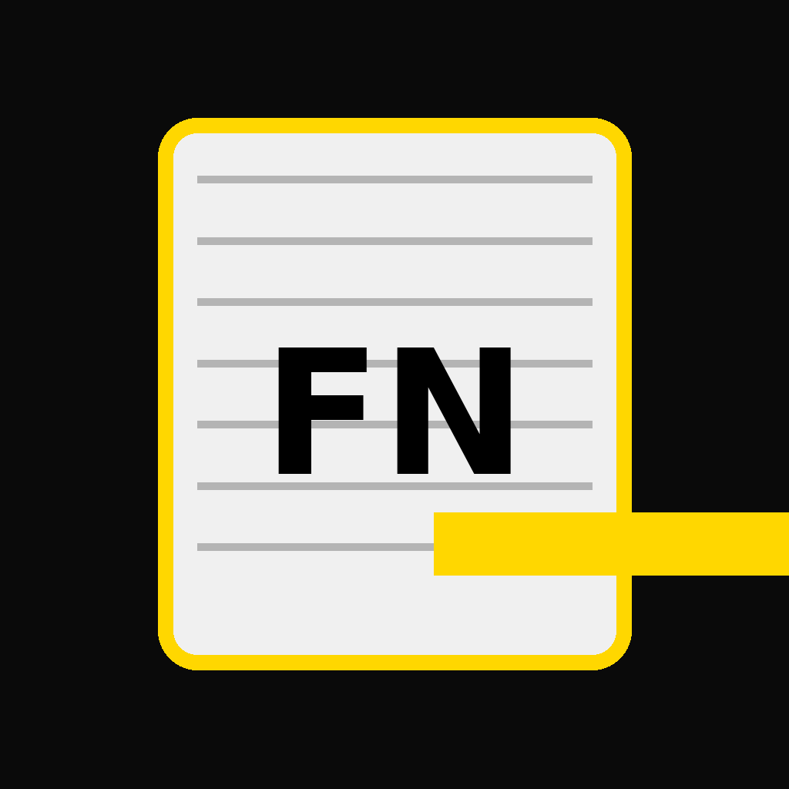

Fancy Notepad — Privacy Policy
Last updated: 2025-09-20
Fancy Notepad is developed by Sir-Dev-A-Lot. We built this app so your notes stay on your device. We do not operate servers that store your notes.
Data We Collect
We do not collect, share, or sell personal data on our servers. The app contains no analytics SDKs and no advertising SDKs.
Stored locally on your device only:
- Notes & content you create or import.
- Preferences such as theme, fonts, and sort order.
- Security PIN (if you enable it).
- Pro status (a local flag indicating you purchased the one-time Pro upgrade).
Purchases (Google Play Billing)
Fancy Notepad offers a one-time $2.99 “Go Pro” upgrade processed by Google Play Billing.
- Payment details are handled by Google; we do not receive your card or bank information.
- We store only a local Pro flag on your device to unlock features.
How Import / Share / Export Work
- Import: If you choose to import, the app reads files locally on your device.
- Share / Export: If you choose to share or export, the app passes your selected content to Android’s system share dialog or writes an export file—only when you ask it to.
Permissions
- Storage / Files & media (optional) — used only when you import or export notes you select.
- Network — used for Google Play Billing and opening policy/support links. The app works offline after installation except for purchases or links you open.
Data Retention & Deletion
- Your notes and settings remain on your device until you delete them or uninstall the app.
- Exported files remain wherever you saved them until you delete them.
Security
Your notes are stored locally using platform storage. If you enable the app PIN, it helps protect access to Fancy Notepad on your device. No method is 100% secure; keep your device updated and protected.
Children’s Privacy
Fancy Notepad is intended for users aged 13 and older. If you believe a child has provided personal data to us, please contact us for assistance.
Changes
We may update this policy as the app evolves. Updates will be posted here with a new “Last updated” date.
This site is provided for convenience. Your notes never leave your device unless you explicitly share or export them.